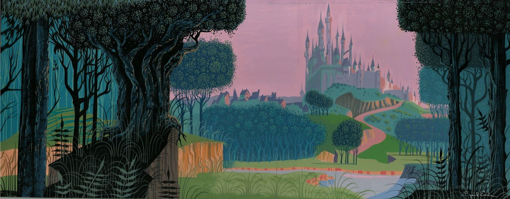
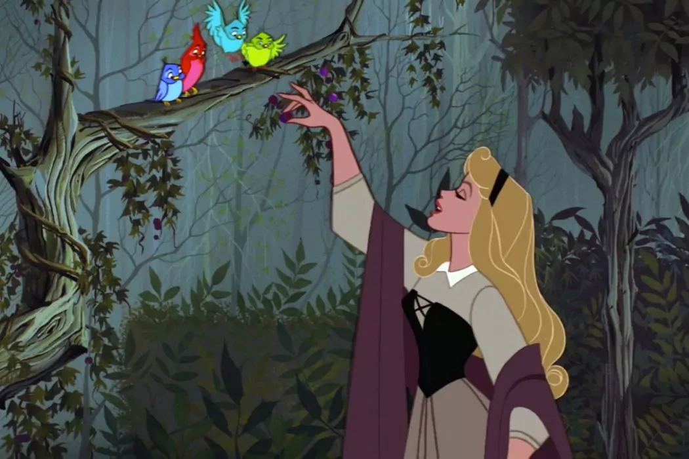
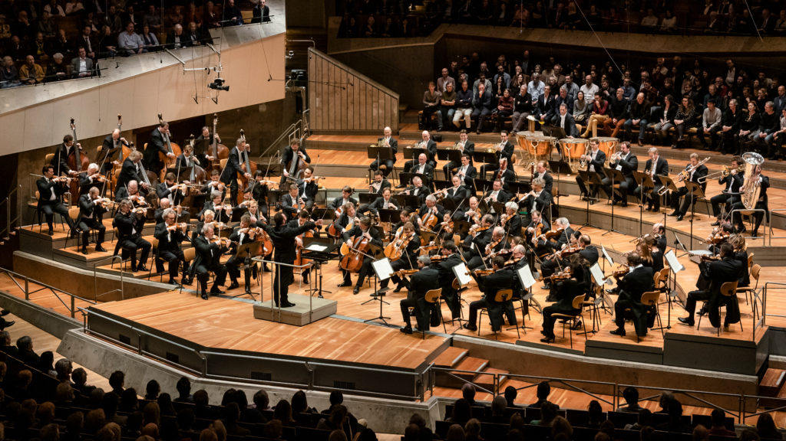
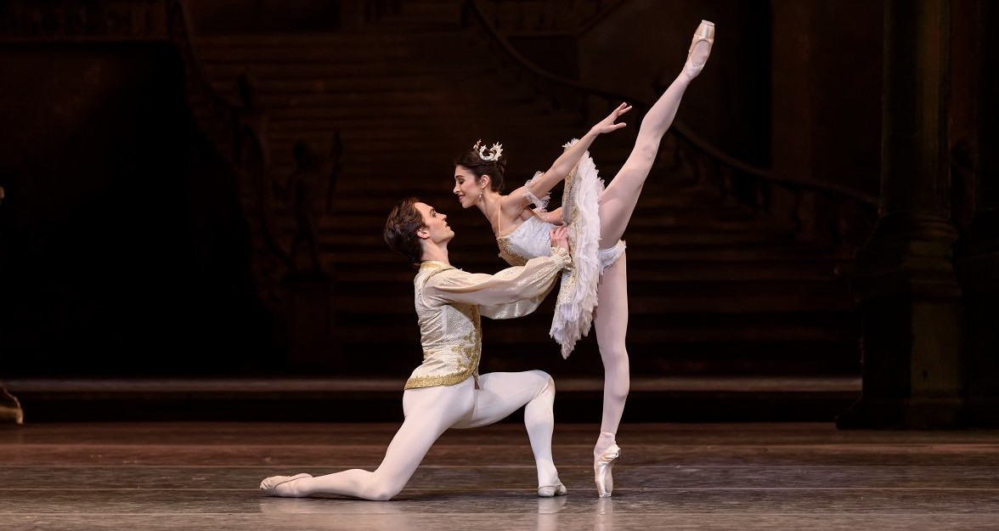

Introducción: Un Clásico de Innovación Visual
La Bella Durmiente no solo es uno de los grandes clásicos de Disney, sino también una obra maestra de la animación que marcó un hito en la historia del cine de animación. Estrenada en 1959, esta película rompió con las convenciones del estudio, presentando un enfoque visual y narrativo completamente novedoso. Con una producción que se extendió a lo largo de toda la década de 1950, Disney apostó por una estética única, una música envolvente y una coreografía que reflejaba influencias artísticas profundas.
Curiosidad:
Celdas de Animación Más Grandes
La Bella Durmiente fue una de las primeras en usar celdas de animación más grandes para lograr mayor detalle en los fondos estilizados, una técnica innovadora para la época.
Proceso Artístico y Creativo: La Búsqueda de la Perfección
La producción de La Bella Durmiente comenzó incluso antes del estreno de Cenicienta en 1950, pero no llegó a las salas hasta 1959, debido a los esfuerzos de Disney por alcanzar la perfección técnica y gráfica. La película destaca por su ruptura con la animación tradicional del estudio, visto en títulos como Cenicienta (1950) y Alicia en el País de las Maravillas (1951).
Bajo la dirección artística de Eyvind Earle, el diseño de fondos fue innovador y estilizado, creando un ambiente visual que combinaba lo moderno con lo clásico. Eyvind Earle, uno de los grandes responsables de la estética de la película, se centró en crear fondos minimalistas pero detallados, que se alejaban del estilo más redondeado y fluido de las animaciones anteriores. Su trabajo se inspiró en el arte medieval y prerrenacentista, utilizando colores planos y formas geométricas que se asemejan a las pinturas de la época.
Curiosidad: Diseño Visual
Los fondos de la película fueron diseñados por artistas especializados como Eyvind Earle, quien utilizó formas geométricas y líneas que creaban una sensación de "pintura en movimiento".
Influencias Artísticas en el Diseño Visual
La Bella Durmiente es un ejemplo sobresaliente de cómo la animación puede ser un lienzo para las artes visuales. El diseño de la película se inspiró en diversas fuentes artísticas, que aportaron un carácter distintivo a cada escena. Una de las influencias más notables fue el arte medieval, en particular los tapices del Unicornio del Museo Metropolitano de Arte y las ilustraciones de Las Bellas Horas de Jean, duque de Berry. Estos elementos se combinaron con la estética gótica y prerrenacentista, creando un estilo único y atemporal.
Además, la silueta de la princesa Aurora fue inspirada en la elegancia de Audrey Hepburn, aportando un aire clásico y sofisticado al personaje. El diseño visual también se vio enriquecido por la decisión de los animadores Frank Thomas y Ollie Johnston de darles personalidades y físicos distintos a las tres hadas buenas, lo que añadió profundidad y diversidad al relato visual.
La Música: La Sinfonía de Tchaikovsky
La música de La Bella Durmiente es una de sus grandes fortalezas, complementando perfectamente la estética visual de la película. La banda sonora está basada en el ballet de Pyotr Ilyich Tchaikovsky, adaptada por George Bruns para la animación. La orquestación, interpretada por la Orquesta Sinfónica de Berlín, fue una de las primeras en ser completamente orquestada, lo que añadió una grandiosidad y profundidad al ambiente de fantasía que rodea la historia.
La música no solo acompaña la narrativa, sino que también refuerza la atmósfera mágica del cuento, dando vida a los personajes y las emociones que experimentan. De hecho, la banda sonora y la animación trabajan en perfecta sincronía para crear una experiencia sensorial única que sigue siendo un referente en la historia del cine animado.
Curiosidad: Música
La banda sonora de La Bella Durmiente es una de las más célebres en el cine animado, pero lo que muchos no saben es que, para la grabación, la Orquesta Sinfónica de Berlín tuvo que aprender a adaptar la partitura de Tchaikovsky para que pudiera integrarse con las escenas animadas. ¡Fue uno de los primeros casos en que se grabó una banda sonora orquestal completa antes de que las animaciones estuvieran completamente terminadas!
Coreografía y Animación: El Movimiento Como Arte
La influencia del ballet en La Bella Durmiente no se limita solo a la música, sino también a la coreografía de los movimientos de los personajes. Los animadores tomaron como referencia las técnicas del ballet clásico para dar vida a los personajes, utilizando movimientos fluidos y elegantes que se reflejan especialmente en las escenas de las hadas y la princesa Aurora.
Un ejemplo clave de esta integración de la danza es la escena de la "Puss-in-Boots and the White Cat", en la que se reinterpreta una pieza del ballet de Tchaikovsky. Para lograr estos movimientos, se emplearon técnicas innovadoras, como la filmación en vivo de ciertos movimientos, lo que permitió a los animadores capturar con mayor precisión las dinámicas del cuerpo humano.
Además, se prestó especial atención a la armonía entre los personajes y los fondos, creando una sensación de un lienzo en movimiento. La utilización de fondos estilizados, junto con la coreografía inspirada en el ballet, permitió que cada escena tuviera una belleza única, convirtiendo la película en una obra de arte visual y musical.
Curiosidad: Coreografía y Animación
Se usaron técnicas de filmación en vivo para capturar los movimientos de los bailarines y crear coreografías de ballet realistas para los personajes.
Conclusión: Una Obra de Arte Integrada
La Bella Durmiente es un ejemplo brillante de cómo la animación puede combinar múltiples influencias artísticas para crear una obra maestra. El proceso artístico y creativo detrás de la película no solo rompió con la tradición de Disney, sino que estableció nuevos estándares en la animación, tanto en términos visuales como musicales. La simbiosis entre la estética medieval, la música de Tchaikovsky, y la coreografía inspirada en el ballet, le otorgó a la película una cualidad atemporal que sigue fascinando a audiencias de todas las edades.